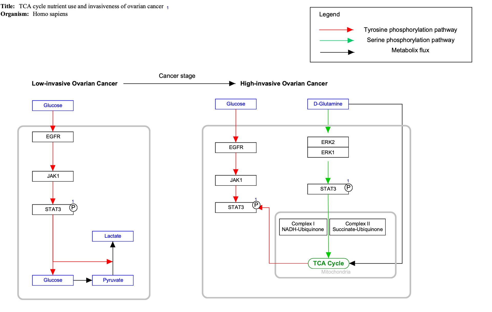

Background
As we've learned previously, interactions between genes, proteins and metabolites should be depicted using the interaction object. However, sometimes it is necessary to depict interactions/lines that are not in fact actual interactions, and therefor not necessarily connected to other objects, for example in a legend. In this case, a graphical line should be used instead of an interaction.
Here we will see how to use graphical lines in a legend, and how to convert an interaction to a graphical line, using the TypeConverter plugin.
Your Mission
Draw the pathway legend depicted in this figure, using graphical lines:
- Download the starter pathway here: WP868.
- Launch PathVisio and install the TypeConverter plugin via Plugins > Plugin Manager. Find the plugin in the list on the left and click Install to install it.
- Open the dowloaded file via File > Open.
- The Legend already has one line, drawn using an interaction. We will change this to instead be of the type graphical line. Right-click on the red interaction line and select Convert type > Interaction to GraphicalLine.
- Now, let's add the green and black interaction types to the legend. There are two ways to do this, and we will use both.
- Copying an existing interaction: Select any of the green interactions in the pathway.
- Click Edit > Copy, and then Edit > Paste. Move the newly copied green interaction away from the diagram by click-and-drag.
- Right-click on the copied green interaction and select Convert type > Interaction to GraphicalLine. Copying an existing interaction is useful for maintaining the style and color of the line.
- Adding a new graphical line: In the right-side Objects panel, select line and place it on the canvas.
- With the line selected, go to Properties and select Arrow as End Line Type. Note: The end line type should match that of the interaction you are describing.
- Place the green arrow graphical line under the red in the legend, and add a label for "Serine phosphorylation pathway" to the right of it.
- Place the black arrow graphical line under the red in the legend, and add a label for "Metabolic flux" to the right of it.
- Save your work as a GPML file under File > Save As.
- Drag-and-drop the GPML file below to submit.